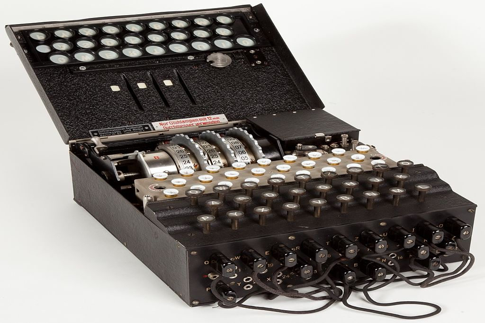
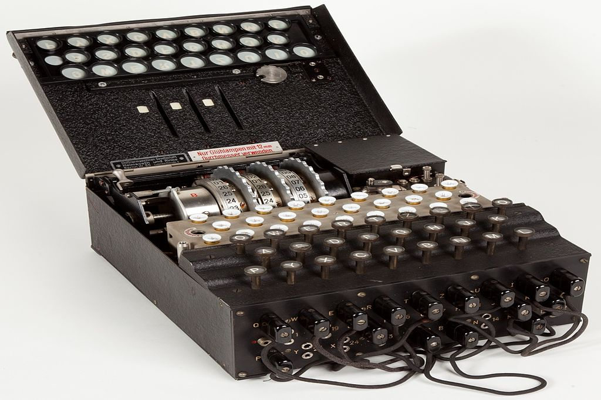
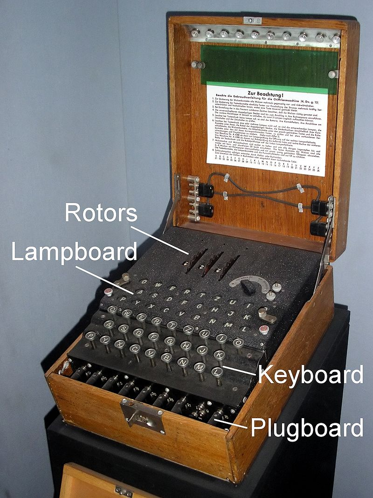

The Enigma Machine was an encryption device invented by the German engineer
Arthur Scherbius at the end of World War I. It is a small box, containing many options for different encryption/decryption
configurations. They box also has a keyboard, on which when a key is pressed, the character pressed is run through
the configurations, and out comes a new character that is then indicated by the lampboard.

Here is an image (click to enlarge) of this very box, the Enigma I, used in the late 1930s during WWII. As you can see, it has a plugboard
in the front, facing towards the operator. Above that is the keyboard alongside the lampboard, that shows the produced
character. Finally, above the lamps are the rotors. All these parts together allow the machine to be in nearly 159
quintillion different states,
thus making it cryptographically very secure for its time.
However, in today's standards it would be rather easy to crack text encrypted with the Enigma Machine, due to massively increased
computation power. In comparison, the modern 2048-bit RSA encryption has a lot more "combinations" than the Enigma Machine (RSA's 22048
over Enigma I's ~2380), thus making modern cryptography way more secure.
On the right side, you can try the simulator to see how the model of the Enigma Machine presented here works. Try pressing some keys!